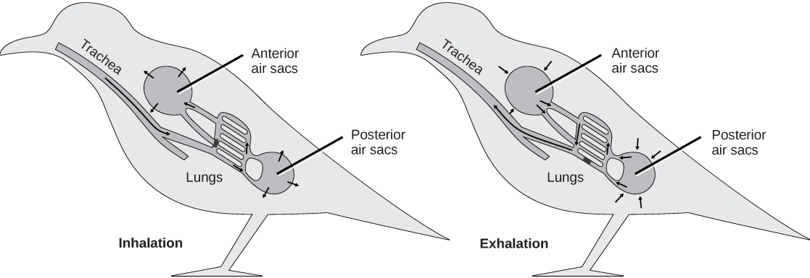

脊椎动物呼吸器官的演化遵循由水生鳃呼吸向陆生肺呼吸、由低效率向高效率转变的趋势：
| 类群 | 主要呼吸器官 | 辅助呼吸 | 气体交换面积与效率特点 |
|---|---|---|---|
| 无颌类（圆口类） | 鳃囊/鳃管 | 皮肤辅助呼吸有限 | 鳃囊结构简单，交换面积小 |
| 鱼类 | 鳃（鳃弓、鳃丝、鳃小片） | 皮肤、鳔（部分种类） | 鳃小片薄、血流与水逆流，交换效率较高 |
| 两栖类 | 肺（简单囊状，无内部分隔） | 皮肤呼吸为主（皮肤湿润、毛细血管丰富） | 肺表面积小，皮肤呼吸占重要比例 |
| 爬行类 | 肺（海绵状，出现分隔） | 皮肤角质化，几乎无辅助呼吸 | 肺内表面积较两栖类显著增大 |
| 鸟类 | 肺（微支气管网）+ 气囊 | 气囊实现双重呼吸 | 气体单向流经肺，交换效率最高，适应飞行高耗氧 |
| 哺乳类 | 肺（支气管树末端形成肺泡） | 膈肌、胸廓参与呼吸运动 | 肺泡数量极大，总交换面积巨大，效率高 |
演化趋势总结：
